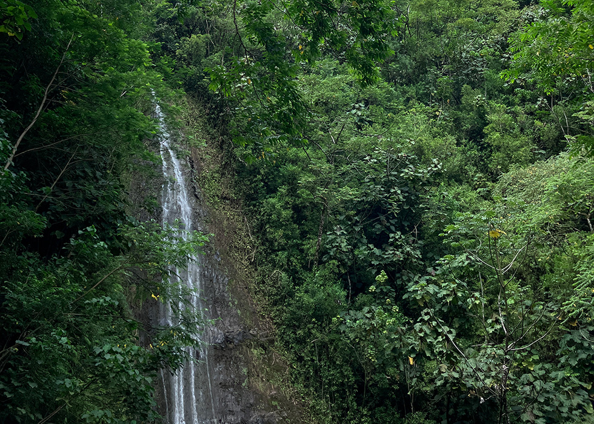
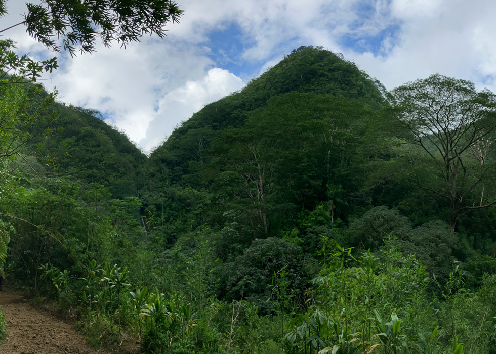

Mānoa Falls: A Tropical Rainforest
July 23, 2026
I had a great time hiking to the Mānoa Valley. If you are looking to explore more of Honolulu beyond the sandy shores, I suggest hiking to Mānoa Falls. While some people call it an easy hike, I don’t completely agree. I think it can be a bit tough, especially if you have a heart condition or problems with your knees, legs, joints, or back. For first-time hikers, this trail might feel a bit challenging, but it’s definitely doable. These challenges aren’t too difficult, but you do need to watch your step as you climb about 500 feet (152 meters) up.
The trail isn’t long (about 1.7 miles or 2.7 km round-trip), but it is steep, with steps and tree roots along the way. After it rains, which happens a lot in this rainforest, the rocks can get slippery and muddy. My main tip for beginners is that your shoes matter more than your fitness level. I’ve seen people try to hike in flip-flops, but it’s much safer to wear shoes with good grip. You don’t need top-of-the-line fancy hiking boots—just comfortable trail shoes or sneakers with sturdy soles work well. Your shoes will probably get muddy, but that’s part of the fun. Bring at least a liter of water. Also, it is good to use bug spray to protect yourself from mosquitoes and other insects. If you skip it, you’ll get bitten fast. I brought a small backpack with a collapsible water bottle, band-aids, trail mix, a hat, sunscreen, and granola bars. A rain poncho is also a good idea.
As I walked along the trail, I enjoyed the amazing views of Mānoa Valley. It is often called “Rainbow Valley” because rainbows appear there so often. The area is full of beautiful plants such as banyan trees, ginger, hibiscus, eucalyptus, bamboo, and hau trees. After about 35 to 45 minutes of hiking, depending on your pace, I reached the end of the trail at a viewing spot in front of Mānoa Falls. The waterfall drops about 150 feet (46 meters) from a cliff into a small pool below. It’s a great spot to take photos and enjoy the scenery before heading back down.

